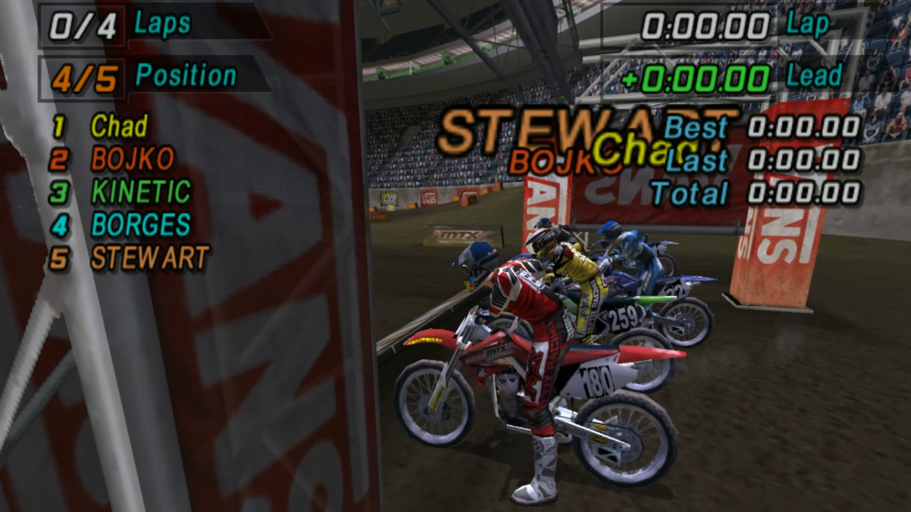
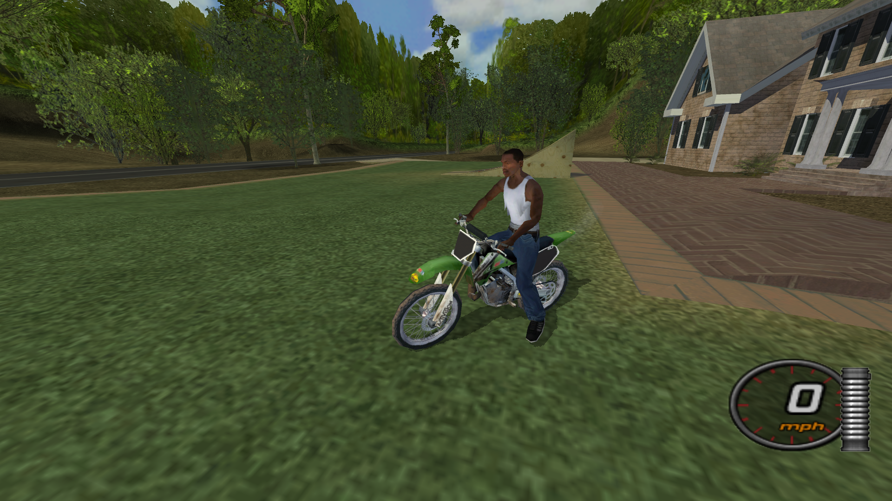
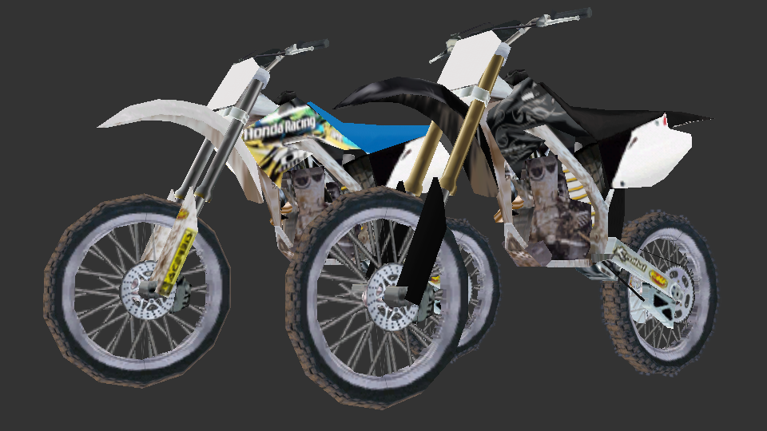
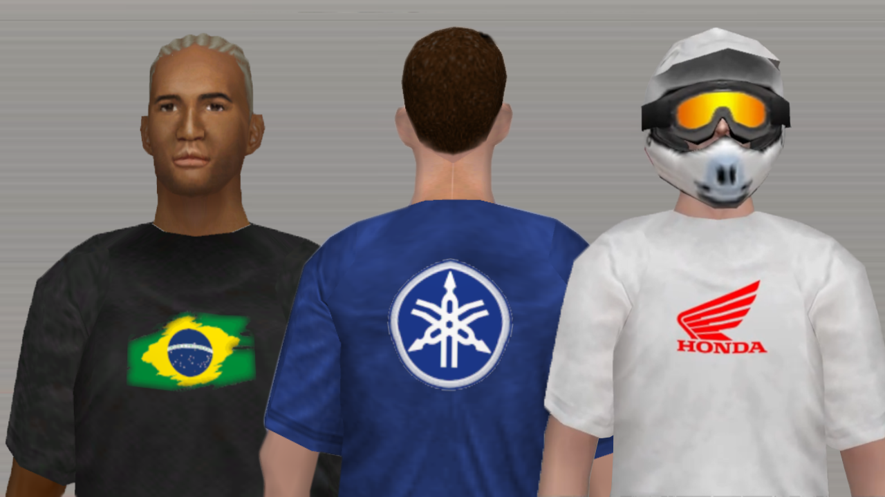
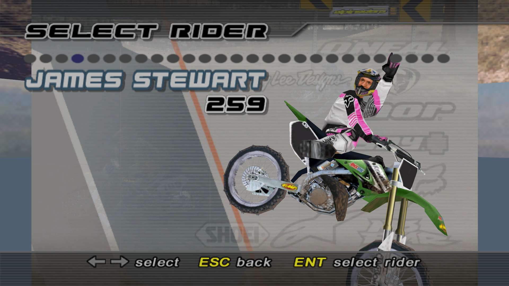
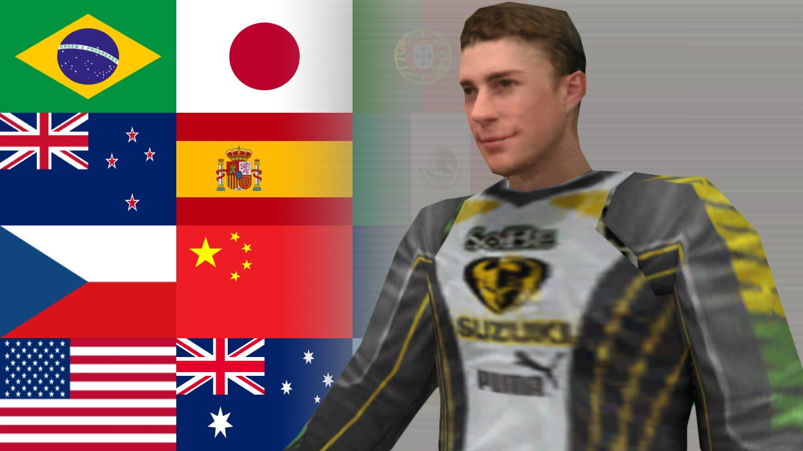

MTX Mototrax PRO is the definitive way to experience the 2004 classic today. Built by people who never stopped playing, this project restores cut content, fixes long-standing issues, and adds massive amounts of new material — all while respecting the soul of the original game. This isn’t just a mod. It’s MTX Mototrax as you remember it… and as it should have been.

From restored cut riders to fully custom, hand-made additions, MTX PRO brings the roster to life. Ride as legends like James Stewart, Ricky Carmichael, Mike LaRocco, and many more. Each rider is crafted with attention to detail, staying true to their real-world look and era — because authenticity matters.

MTX PRO introduces a selection of new bikes, including additional brands and custom liveries. Every bike features accurate, period-correct designs inspired by real motocross history. No placeholders, no guesswork — just bikes that look and feel right when you line up at the gate.

Customization goes far beyond the original game. Helmets, jerseys, pants, boots, chest protectors, backpacks, logos, hair, hats — it’s all here. Mix and match tons of new gear to create a rider that actually feels like yours, whether you’re chasing realism or your own signature style.

Tracks are where MTX PRO truly shines. Discover original, hand-crafted maps across supercross, motocross, freestyle, and freeride. No longer stuck replaying the same layouts, you’ll be testing your skills on tracks you’ve never ridden before.

MTX Mototrax is loved all over the world, and MTX PRO reflects that. Multiple UI and menu translations are already available, with more actively in development. Our goal is simple: let everyone enjoy the game without language getting in the way.